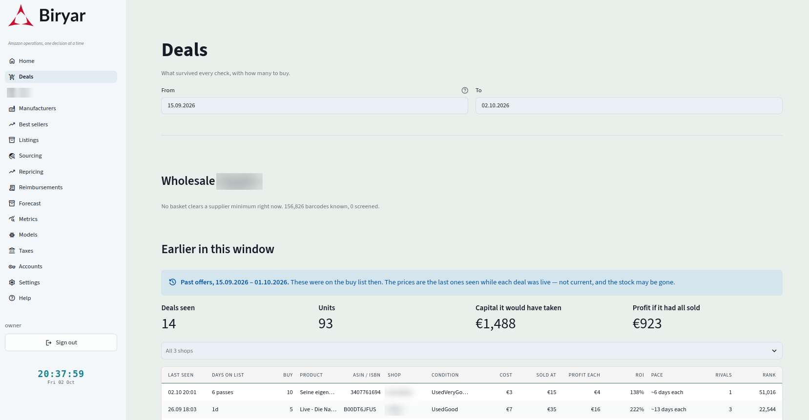
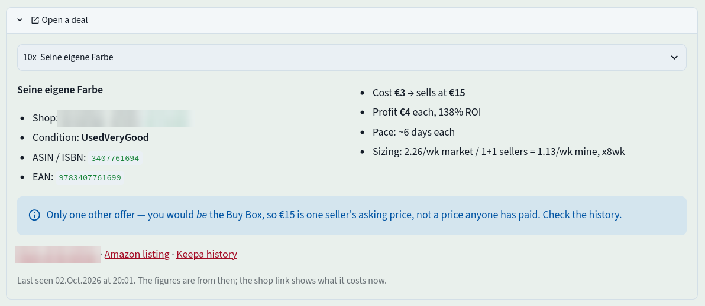
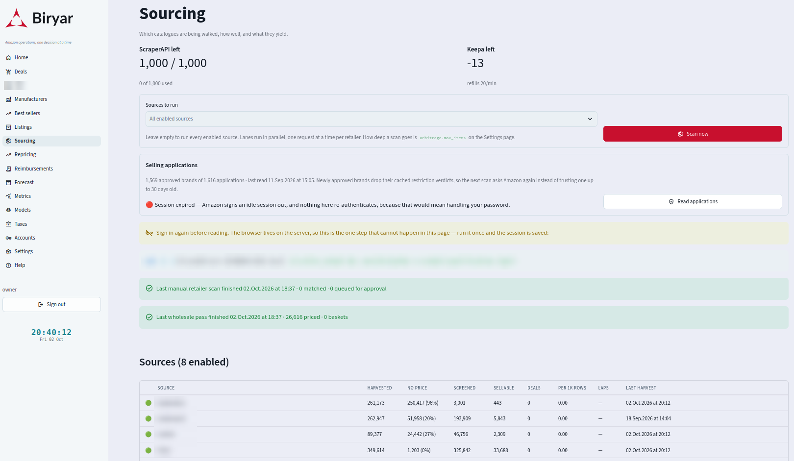

Nearly nine hundred thousand retail products went in and one hundred and three deals came out. This report explains what happens in between, and why most of the work of finding a bargain turns out to be the work of not being fooled by one.
Biryar is the Kurdish word for decision, and the name describes the platform's job quite literally. It is a private operations system built for one Amazon seller, Samani Ventures, and it consists of several cooperating agents. Each agent watches one part of the business, gathers evidence and proposes an action. None of them acts on its own. A purchase, a price change, a message to a customer or a claim against Amazon is written into an approval queue and waits there until a person with the right to approve it has looked at the evidence. The platform drafts and the owner decides. This report is the first of a series on Biryar, published by Ciya Labs, in which each agent is described on its own before a final report puts them together.
Sourcing is the natural place to start, because it is where the business began and because every other agent depends on it. A reseller earns nothing until it owns stock that someone wants, and sourcing is the agent that decides which stock that should be. The idea is old and simple. Some products are sold more cheaply in a high-street or online shop than they sell for on Amazon, and the difference, once fees and costs are paid, is a margin. Practitioners call this retail arbitrage.
The simplicity is misleading. Three questions turn out to be hard, and they structure the rest of the report. Where can stock come from, given that the only practical sources are other people's websites and that those websites owe the business nothing? Which of the products found there could this particular account actually sell at a profit, once every legal, commercial and physical restriction has been applied? And how can that answer be kept current, when prices change daily and the polite way of reading a shop's catalogue takes weeks?
The system described here answers all three, imperfectly but measurably. Its first version targeted American retailers, which turned out to be the wrong market for a business that si registered in Germany! and was replaced. The current version reads seven German retailers and has been running around the clock on a small server since mid-August 2026. All counts in this report come from that live system on 2 October 2026.
Picture a book that a shop sells for €8 and that sells on Amazon for €20. It looks like €12 of profit. In practice Amazon keeps a referral fee of around fifteen percent and charges a few euros to store and ship the book, the book has to be labelled, packed and sent to an Amazon warehouse, and a small German business that does not charge VAT on its sales pays VAT on all of those services without being able to reclaim it. Section 4.6 works through the numbers. The €12 shrinks to about €3, which is still a deal, but a thinner one than it first appeared.
Fees are the visible part of the problem. The invisible part is a list of ways in which the two prices being compared can turn out to describe different things. Each item on the list below was learned the expensive way, through a deal that looked excellent and was not.
| Question | Why it matters | What happens if it is ignored |
|---|---|---|
| Does Amazon sell this product at all? | Without a listing there is nothing to sell into. | Stock with no market. |
| May this account sell it? | Amazon restricts many brands and categories to approved sellers. | Stock that cannot be listed, however profitable it looks. |
| Is it the same pack? | A barcode identifies a product, not a quantity. | A buyer orders 250 filing strips and receives 25. |
| Is it the same condition? | A shop's "very good" used copy is not a new one. | Profit computed against a price the goods can never fetch. |
| Has anyone paid the Amazon price? | A lone seller can ask any price on a slow listing. | Profit computed against a wish. |
| Does it sell, and how fast? | Unsold stock pays storage and ties up cash. | A year of inventory for a product that sells twice a month. |
| Is the shop price still true? | Clearance lasts days, not months. | A deal that was gone before anyone looked. |
Every one of those questions can be answered automatically, but each answer costs something. Some cost a request to a retailer, which has to be spaced out of courtesy. Some cost a call to Amazon's seller interface, which is free but rate-limited. Some cost a token from Keepa, a commercial service that records Amazon price and sales-rank history, which is paid for. The design problem is therefore one of ordering and budgeting as much as one of judgement. Ask the cheap questions first, spend the expensive ones only on the survivors, and keep everything that has been learned so that no question is paid for twice.
Stigler [1] argued that price dispersion is a measure of ignorance. Buyers do not know every price, searching is costly, and so identical goods sell at different prices in different places. Bakos [2] predicted that electronic marketplaces would lower those search costs and push prices towards the competitive level. Brynjolfsson and Smith [3] found that online prices were indeed lower than offline ones, but that substantial dispersion persisted online all the same. Retail arbitrage lives in that residual dispersion. It also lives under the constraints that Shleifer and Vishny [4] described for financial arbitrage in general. Real arbitrage needs capital, carries risk and is performed by specialists with limited resources, which is why apparent mispricings can survive. A reseller with a few thousand euros of working capital and one pair of hands is exactly such a specialist.
The economic reading leads to a clear expectation. Gaps should be largest where comparison is hardest. New, branded, barcoded goods sold by large chains are the easiest products in the world to compare, and the gaps there should be small and short-lived. Used goods, whose condition varies copy by copy, are harder to compare, and Akerlof [5] showed that quality uncertainty of exactly that kind thins and distorts markets for used goods. Section 5 shows that the data agree with this expectation rather strongly.
Any system that estimates the value of many options and picks the best ones will be disappointed on average, even if every individual estimate is unbiased. The options at the top of a ranking are disproportionately those whose value was overestimated. Petroleum engineers noticed this in oil-lease auctions [6], and Smith and Winkler [7] gave the general statement and called it the optimizer's curse. Sourcing is a pure instance. When 875,963 candidates are ranked by apparent margin, the largest margins are dominated by errors, by the wrong pack, the wrong condition or a price nobody pays, because a genuine gap of 300 percent is far rarer than a data error that produces one. Combined with a tiny base rate of true deals, which Bar-Hillel [8] showed people routinely neglect, this means that even a very small false-positive rate at each stage would fill the buy list with mistakes. Much of the design in Section 4 is best read as a defence against this curse.
Deciding that a shop's product and an Amazon listing are the same thing is a record-linkage problem, formalised by Fellegi and Sunter [9] and surveyed by Christen [10]. Biryar relies on the strongest identifier available, the European Article Number printed as a barcode on the product, which makes most of the problem disappear. Most, not all. Barcodes are occasionally reused or mistyped in catalogues, and the same barcode can describe a single item on one site and a multipack on another. The remaining checks therefore compare titles, pack sizes and price ratios, which is classical record linkage applied to the cases the identifier cannot settle.
Reading other people's websites at scale is governed by convention. The Robots Exclusion Protocol, standardised as RFC 9309 [11], lets a site declare what automated readers may fetch, and the crawling literature [12] treats politeness, meaning a limited request rate per host, as a first-class constraint alongside coverage and freshness. Cho and Garcia-Molina [13] studied how a crawler with a fixed budget should revisit pages to keep a local copy fresh. One of their results is counter-intuitive and relevant here. Revisiting pages in proportion to how often they change can be worse than revisiting all of them equally, because a page that changes very often goes stale again almost immediately and the visits spent on it are largely wasted. Freshness has to be bought where it pays.
Amazon publishes no sales figures, only a sales rank per category. Chevalier and Goolsbee [14] and Brynjolfsson, Hu and Smith [15] showed that rank can be mapped to approximate sales quantities, but the mapping differs between categories and has to be estimated for each. Chen, Mislove and Wilson [16] studied the Amazon marketplace directly and documented the role of the featured offer, often called the Buy Box. Most purchases go through it, it is usually but not always held by the cheapest offer, and sellers who price algorithmically win it more often. Any estimate of how many units a new seller will move on a listing has to account for that offer and for the competitors sharing it.
Retail prices fall for different reasons. Varian [17] modelled temporary sales as a deliberate randomisation of price aimed at buyers who shop around, and Pashigian [18] linked permanent markdowns to demand uncertainty, with goods marked down because they did not sell. The distinction matters to a reseller. A temporary sale is a window to buy in, while a permanent markdown may be followed by further cuts that undercut whatever was bought at the first one.
The agent is not one program but five cooperating parts, connected through a shared database on the server called the watchlist. Three of them run continuously as independent services, each owning one scarce resource. The retail service reads shops, the Amazon service screens products against Amazon, and the demand service measures how fast they sell. The fourth part, the buy list, is rebuilt every hour from what the three services have stored, and the fifth is the Deals page on which the owner reads it and decides. Figure 1 numbers and colours the five parts, shows how a product travels between them, and lays out on a single time axis how long each of them takes.
Two clocks run through this picture, and separating them is the single most important design decision in the agent. Whether a product exists on Amazon, whether this account may sell it and whether anyone buys it change slowly, over weeks or months. The shelf price changes daily. So the expensive, slow questions are asked once and remembered, and only the cheap, fast question is asked again and again. Coverage becomes a one-time cost and freshness becomes the recurring one, which is the right way round, because a product's existence is stable and its price is not.
The harvest reads each retailer's sitemap, a machine-readable index that shops publish precisely so that search engines and other crawlers can find their product pages without walking the navigation. It then fetches product pages one at a time and extracts what it needs, which is the name, the price, the barcode, the category, the availability and, where the shop states it, the condition of the goods. Most of this comes from structured product data that shops embed for search engines. The rest is read from the page text.
Three rules govern the harvest and none of them is negotiable. It obeys each site's robots file, and when a site answers a request for that file with a refusal rather than an error, the whole site is treated as off limits. It spaces its requests to each host by several seconds, and slows down further for any host that starts refusing, so that one shop is fetched every eight seconds after it declined about fifteen percent of requests at a five-second spacing. And it announces itself as an automated reader instead of posing as a browser. A consequence of these rules is that reading a catalogue of 80,000 pages takes most of a week, which is the reason the two clocks of Section 4.1 exist at all.
Condition deserves a paragraph of its own, because it was the most expensive lesson in the agent's history. One retailer sells remaindered books, new books with small cosmetic damage that by the shop's own definition no longer count as new. The early pipeline compared them against Amazon's price for new copies. On one day this produced a buy list of ninety deals worth a projected €11,131, and when the same books were priced against Amazon's used offers instead, the eight best deals all turned into losses. The harvest now records condition for every page that states it, maps each shop grade to the lowest Amazon grade it could honestly be sold under, and treats a page that says nothing as unknown rather than as new. Overstating condition risks a customer complaint, which costs more than a missed margin, so the mapping errs downward.
Seven retailers are harvested in parallel lanes, one per shop. Because politeness is enforced per host, the lanes do not slow each other down. They do compete for something downstream, however. Every harvested row has to be screened against Amazon, and screening shares a single rate limit. Six lanes running flat out would produce rows faster than screening can consume them. Each lane is therefore weighted by its measured yield of deals per thousand rows harvested, so that the shops that produce deals run at full speed and the shops that rarely do run at a trickle.
Screening decides whether a harvested product belongs on the watchlist, and revisits that verdict about once a month. It asks a fixed sequence of questions and stops at the first one that rules the product out, so that no expensive question is asked about a product a cheaper one has already disqualified. Table 2 lists the sequence with the number of products each step removed in live operation.
| Step | Question | Answered by | Removed |
|---|---|---|---|
| 1 | Is there an Amazon.de listing with this barcode? | Amazon catalogue lookup | 181,278 |
| 2 | May this account sell it? | Amazon listing-restrictions check | 416,678 |
| 3 | Do both sides sell the same quantity? | Comparison of the two titles | 4,209 |
| 4 | For new goods, is the Amazon price a featured offer? | Amazon pricing data | 7,847 |
| 5 | Has it ever sold, with a rank inside a real market? | Sales rank | 148,412 |
| Passed every step and watched | 55,698 |
Step 2 is the largest single filter, and it is worth explaining for readers outside the trade. Amazon requires approval before a seller may list many brands and some whole categories, such as books or food. Approval is usually granted on the strength of an invoice from the manufacturer or an authorised distributor, never on a till receipt from a shop. For a young account this means that two thirds of everything found on Amazon is closed to it. Screening records the reason for each restriction rather than discarding the product, because those records are the raw material of a different strategy, choosing which brands to apply for, that a later report in this series describes.
Step 3 implements the rule that silence is not agreement. The titles on both sides are read for counts such as "25 Stück" or "12er-Pack", volumes and weights, with litres and millilitres normalised so that "1,5 L" equals "1500 ml". If the two sides state different quantities the product is rejected. If one side states a quantity and the other says nothing, the product is also rejected, because that is exactly what a multipack looks like from the outside. The rule costs a few genuine deals and buys a guarantee that the agent never ships the wrong amount. The asymmetry of the two errors justifies it.
Step 4 guards against a price that is only one seller's hope. On a slow listing a single merchant can ask almost anything, and Amazon will display it. When nobody holds the featured offer, the displayed price is evidence of nothing, so new goods without one are set aside. Used goods are judged differently, against the comparable used offers, because the featured offer on a listing belongs to the new market.
Gating has one more subtlety. Approval moves in both directions, and the two directions cost different amounts when they are missed. A product that becomes sellable because the owner won an approval is an opportunity missed if the system does not notice, which is recoverable. A product that becomes restricted because Amazon changed a rule is stock that cannot be listed, which is not. The cache of restriction verdicts therefore expires allowed verdicts sooner than restricted ones, and verdicts are reset at once whenever a new approval is imported.
The watch re-reads the shop page of every watched product, notes the price and the stock, and compares the price with a reference. A fall of five percent or more against the reference raises the alarm. The choice of reference is subtle, and it decides what the watch can see. Comparing with yesterday's price makes a slow slide invisible, since a shop that cuts four percent at a time never trips a five percent threshold, however far the price falls in total. Comparing with the lowest price ever seen is worse in a different way, because the reference sinks with every cut and a sale that returns after a recovery looks like nothing new. The watch therefore uses the highest price at which the product has been seen as its regular price, and the reference only ever moves up. Figure 2 runs all three rules on the same price.
The five percent threshold is low on purpose, because markdowns at the shops in question are typically twenty to fifty percent and the five percent margin only filters out rounding and display noise. The watch also records when a product goes out of stock, which turns out to be the more common observation, and Section 7 returns to it.
The watch makes no calls to Amazon at all. That sounds like a detail and it shaped the architecture. An early version placed it with the other Amazon work because it is about prices, and it then spent long turns of the Amazon service's time while using none of its quota. It now lives with the harvest, because the resource it actually competes for is the retailers' patience.
A low price on a product nobody buys is not a deal, it is a storage bill. The velocity service measures how fast each watched product sells, using the history of its sales rank as recorded by Keepa. Every meaningful improvement in rank corresponds to at least one sale, so counting those improvements over a window gives a count of sales events rather than an estimate inferred from the rank's level [14, 15]. The count is a floor, because two sales between rank updates look like one, and that is the right direction to be wrong in when the number decides how much stock to buy.
Two windows are measured, thirty and ninety days, and decisions use the lower of the two rates. The thirty-day rate is current but noisy, the ninety-day rate is stable but may include weeks before a product existed, and taking the smaller one overstates how long a purchase will take to clear. The reason for not simply using the rank is visible in a single comparison from the live data. A pack of baby wipes at rank 3,871, a video game at rank 12,338 and a DVD at rank 916 look as if they could be put in order, the DVD fastest and the game slowest. They cannot, because each rank is a position within a different category, and a category with many sellers and many sales pushes even a fast product to a large number. The three ranks are measured on three different scales and say nothing about one another. What they could not show is what the counted sales did. The game, the most attractive of the three by margin, sells about two copies a month.
The rate measured this way is the whole listing's. A new seller gets only part of it. Biryar assumes that, at roughly equal prices, a listing's sales are shared evenly among its sellers, so with N competing offers the account's share is one in N plus one. This is a deliberate simplification, and Section 7 discusses where it fails. The same velocity response also carries Keepa's ninety-day average price for the listing, which costs nothing extra and supports one of the buy-list checks below.
Profit is computed for each candidate by subtracting every modelled cost from the Amazon price. The business is registered under the German small-business rule, the Kleinunternehmerregelung of §19 of the VAT Act, confirmed in writing by its tax office. Under that rule no VAT is charged on sales, so the whole Amazon price is revenue. In exchange, the VAT inside a shop's shelf price cannot be reclaimed and is a real cost, and the VAT owed under the reverse-charge rule on Amazon's fees, which are invoiced from Luxembourg, must be paid with no deduction. The cost model applies that charge conservatively to all handling costs. Figure 3 shows where the €20 of the opening example goes.
Profit equals the Amazon price minus the referral fee, the fulfilment fee, preparation, inbound freight, reverse-charge VAT on those services, and the gross shelf price. The referral fee is taken as fifteen percent, the conservative end of Amazon.de's range of roughly seven to fifteen percent depending on category. The fulfilment fee is a flat €3.00 per unit, which overstates the true fee for small, light items, so profit at the bottom of the price range is understated rather than overstated. Preparation is costed at €0.60 per unit, of which most is labour valued at what an assistant would be paid, and inbound freight at €0.70 per unit, covering a share of the carton and the parcel into Amazon's warehouse. Return on investment is profit divided by the money actually paid at the till.
The model also knows the alternative, standard VAT registration, under which purchase VAT is reclaimed and sales VAT is remitted. Switching between the two changes reported profit more than any other single parameter, and the choice is a legal status rather than a setting, so the agent refuses to run with a regime it does not recognise rather than falling back silently to no VAT at all.
Delivery from the shop to the business is charged per order and waived above a basket threshold, so it is reported per shop basket rather than folded into the per-unit cost. A buy that clears a free-delivery threshold costs less per unit than the same buy made one item at a time.
Once an hour a job rebuilds the buy list from the watchlist. It fetches nothing. Every input it needs is already kept fresh by one of the three services, so building the list is a ranking query, cheap enough to repeat hourly. What the job enforces itself is freshness and consistency, through the rules in Table 3. Each rule exists because the agent once produced a deal that broke it.
| Rule | Setting | Failure it prevents |
|---|---|---|
| Shelf price re-checked recently | within 48 hours | Goods gone, or a price long since changed |
| Amazon price recent and in the same condition as the shelf | within 21 days, condition recorded | A used copy priced as new |
| New goods priced against a featured offer | required | A lone seller's asking price |
| Pack size re-judged from both titles | must agree | A single item matched to a multipack |
| Asking price close to its own history | at most 1.35 times the 90-day average | A price far above anything ever paid |
| Profit and return after all costs | at least €3 and 25 percent | Margins eaten by handling |
| Sales rank inside a real market | 300,000 or better | Listings that have effectively stopped selling |
| Speed of sale at this account's share | one unit within 56 days | Stock that outlives its storage budget |
The price-history rule deserves a word. The featured-offer check asks whether anyone competes for the sale, and it does not catch a price that is simply far above the listing's history, because a lone seller can hold the featured offer on a slow listing at an absurd number. Three such rows reached an early buy list at 1.9, 2.6 and 3.9 times their ninety-day averages. The threshold of 1.35 is loose on purpose, since restocks and thin markets legitimately move a price by twenty or thirty percent. A product with no ninety-day history at all is excluded, because for a buying decision having no history answers the same way as nobody having paid.
A separate advisory check flags any deal where the Amazon price is more than four times the shop price. It does not remove the deal, because genuine clearance does reach such multiples, but it asks the owner to confirm that both sides describe the same product. It was calibrated on a real case, a €4.49 face mask whose barcode had been attached to a €21.85 ceiling lamp in Amazon's catalogue.
Each surviving deal is sized as well as listed. The suggested quantity is the account's weekly share of sales multiplied by eight weeks of cover, rounded up and capped at twenty-four units for a first purchase from an unproven source. Eight weeks balances two costs. More cover ties up cash and pays storage, less means reordering constantly. The cap reflects the fact that the first purchase from a source is also an experiment, and the inventory literature [21] would describe the rule as a simple cover-based ordering policy with a safety limit on exposure.
Deals are ranked by expected profit per day, meaning the profit per unit multiplied by the account's daily share of sales. Ranking by profit per unit, or by profit times quantity, put the fattest margins first however slowly they moved, which is how a margin-first buyer ends up holding a warehouse of slow stock. A deal that earns €2 and sells every other day is worth more than one that earns €9 and sells once a month.
Running continuously rather than in a nightly window created a problem the nightly design had hidden. Several kinds of work compete for the same few resources, and when they run at the same time they can either collide or starve each other. The answer was to give each scarce resource exactly one owner, as Figure 4 shows.
Inside the retail service, the harvest lanes and the price watch would otherwise reach the same hosts at the same time and halve the effective spacing between requests. They are coordinated by a lock of the classic readers and writers kind [19]. Harvest lanes are readers and may run together, since different hosts cost each other nothing. The watch is the writer and takes the shops for itself in turns of two hundred products, after which the lanes get them back.
Inside the Amazon service, the obvious design of always doing the most important work first would starve everything below it, because screening has a backlog for as long as the harvest runs. Each lane is instead given a share of the service's time, and the scheduler picks whichever lane is furthest below its share and actually has work to do. This is the idea behind fair queueing in networks [20]. A lane with nothing to do yields its time rather than idling, so once the catalogue is screened, the pricing of restricted products quietly speeds up.
The demand service needs no such arbitration, because Keepa is a separate account with its own limit. Its constraint is cost. One token buys one product's history, so it measures only products that have already passed screening and have an Amazon price. It was also the easiest lane to forget. In August an older schedule measured 150 products a night while screening added about 900, the backlog grew by 750 a night, and the unmeasured products silently vanished from the buy list, since a product without a measured sales rate is never offered. A product that has not been measured is excluded rather than flagged, which is the safe choice and also the reason a stalled lane is invisible. A separate heartbeat now records that each service is alive, and a missing heartbeat raises an alert.
Everything above ends on one page. The Deals page shows the current buy list with the shop price, the Amazon price in the matching condition, the profit, the return, the measured sales rate, the number of competing sellers and the suggested quantity, together with links to the shop and to the Amazon listing so that each claim can be checked by eye before money is spent. Shop baskets are grouped so that delivery thresholds are visible. A separate view shows every deal that was live during a chosen period, which answers the question of what the agent was offering last week, a question a list rebuilt every hour cannot answer on its own.

Opening a deal shows the evidence behind it. If the deal is on the current buy list, three buttons sit below it, bought, rejected and skipped. They appear only there. A deal opened from the look-back view, like the one in Figure 6, carries the prices it had while it was live, and a button that invited a purchase at a price that may no longer exist would be exactly the mistake the hourly rebuild is there to prevent. So the look-back keeps the evidence and the links, which are enough to see whether the deal still holds, and leaves the verdict to the live list. The verdict keeps the deal off later lists, and it is stored with the deal as a label, since what the owner bought and what the owner turned down are the only direct evidence of what a good deal looks like to this business. A separate Sourcing page offers the research view, everything the ranking has ever scored, including the candidates that were later disproved.


Figure 8 follows the whole harvest through the agent. The bars use a plain linear scale, so the length each one loses against the stage above is the true size of that step. The last stages shrink to hairlines on such a scale, which is why the right-hand column gives the share each step keeps. That column reads the same at every size, from hundreds of thousands of products down to one.
Three things stand out. Almost a quarter of what the shops sell is not on Amazon.de at all. Two thirds of what is on Amazon is closed to this account, which makes restrictions, not prices, the main reason a product cannot be a deal. And of the products the account may sell, more than two thirds have no sales rank or one so poor that the market is effectively dead.
Table 4 breaks the funnel down by source. The retailers are described by type rather than by name.
| Source | Harvested | On Amazon | Restricted | Watched | Deals | Per 1,000 |
|---|---|---|---|---|---|---|
| Used-media reseller | 347,598 | 97.0% | 48.3% | 33,682 | 95 | 0.27 |
| Remaindered-books shop | 28,389 | 99.7% | 70.5% | 5,033 | 4 | 0.14 |
| Pet-supplies shop | 29,411 | 67.7% | 77.4% | 1,711 | 2 | 0.07 |
| Electronics chain A | 210,426 | 60.8% | 84.4% | 6,677 | 2 | 0.01 |
| Electronics chain B | 209,983 | 60.7% | 85.3% | 5,843 | 0 | 0.00 |
| Drugstore chain | 47,093 | 74.4% | 88.5% | 2,309 | 0 | 0.00 |
| Bookshop chain | 3,063 | 98.9% | 63.4% | 443 | 0 | 0.00 |
The two electronics chains supplied 48 percent of everything harvested and 2 of the 103 deals. Their catalogues are mostly new, branded goods, the easiest products to compare, and eighty-five percent of what they sell that also appears on Amazon is restricted for a young account. The used-media reseller supplied 40 percent of the harvest and 92 percent of the deals.
Ninety-nine of the 103 deals concern used goods, graded "like new", "very good" or "good". Used goods account for about 272,000 of the 875,963 harvested products, roughly 31 percent. The deals are therefore concentrated in used goods by a factor of about three relative to their share of the harvest, and in new goods the agent found almost nothing. The average deal earned between €8 and €10 per unit after all costs in the model, with returns well above the 25 percent threshold.
The owner recorded a verdict on 137 deals. Two were bought, three were skipped and 132 were rejected, most of them from the used-media reseller. The verdicts were recorded without reasons, which limits what can be learned from them, and Section 7 returns to this.
Screening resolves a product in about 0.8 seconds, which gives the Amazon service a capacity of roughly 4,500 products an hour. Keepa refills twenty tokens a minute, about 1,200 measurements an hour, and the demand service has measured 53,391 of the 55,698 watched products, of which 22,563 sold at least once in both windows. The watch is the slowest part. Over the last ten days it re-checked between about 440 and 1,800 products a day, and a batch of two hundred took around 45 minutes, since every request waits its turn behind the per-host spacing and behind the harvest lanes it shares hosts with.
Read as a list, the rules of Tables 2 and 3 look like an accumulation of special cases. Read through the optimizer's curse they are one idea. When the agent ranks hundreds of thousands of candidates by apparent margin, the candidates at the top are disproportionately those whose margin was mismeasured, and every rule removes one specific way of mismeasuring it. The wrong condition inflates the Amazon price. The wrong pack inflates it by a factor of ten. A lone asking price inflates it by whatever the seller hoped. A stale shelf price deflates the cost. Each failure was discovered as a spectacular deal, and that is no coincidence, because spectacular deals are exactly where the curse concentrates its errors [7].
The base rate makes this unavoidable. With one true deal per 8,500 products, a check that wrongly passed just one bad candidate in a thousand would let through about eight bad deals for every good one. The agent is accordingly built to prefer silence to optimism at every point of doubt. An unstated pack size blocks the match, an unknown condition is not new, an unmeasured sales rate is not a sale, and a missing price history is not a price. Each of these choices costs some genuine deals. Together they are what makes the remaining list worth reading.
The concentration of deals in used goods is the clearest result in this report, and the literature anticipates it. Search costs sustain price dispersion [1, 3], electronic markets erode it fastest for standardised goods [2], and quality uncertainty makes used-goods markets thin and uneven [5]. A new, barcoded television is compared by millions of shoppers and price bots every day, and any gap between a chain and Amazon closes quickly. A used DVD in "very good" condition is a slightly different product from every other copy, its Amazon used market is thin, and gaps can persist. In that sense the agent did not choose the used-goods niche. The niche was the only place where its filters left anything standing.
The same reading explains why the shops with the largest catalogues were the least useful. Volume of harvest is not volume of opportunity, and the harvest weights of Section 4.2 now reflect measured yield rather than catalogue size.
Ranking by expected profit per day rather than by margin is a small change in code and a large one in behaviour. It moves the agent from asking how much a unit earns to asking how much the business earns per day of holding it, which is the quantity that pays rent and repays credit. The same reasoning shapes the sizing rule, the refusal to use sales rank across categories, and the conservative choice of the lower of two sales-rate windows. Every one of these errs towards buying less, because unsold stock is the costliest mistake a small reseller can make. It pays storage, it occupies capital that could have bought something faster, and it eventually leaves at a loss.
The agent would be simpler if it could read the shops faster. It cannot, by choice, and that choice turned out to shape the system more than any algorithm did. Because a full read of a catalogue takes days, the two clocks of Section 4.1 had to exist. Because politeness is per host, the harvest could run in parallel lanes. Because the lanes then outran screening, they had to be weighted by yield. Because the watch and the harvest share hosts, they needed a lock. Each of these follows from treating other people's servers as a resource that the agent does not own, which is the attitude the crawling literature recommends [11, 12] and also the one that keeps a small business welcome.
Freshness is the binding constraint. The watch can re-check between roughly 440 and 1,800 products a day, while 55,698 products are watched. At that rate a full sweep takes weeks, and the buy list only accepts shelf prices from the last 48 hours, so on any given day most watched products are simply not eligible. This is the main reason the last step of the funnel in Figure 8 is so steep. The watch also currently visits products in order of age alone, which Cho and Garcia-Molina [13] would recognise as a uniform policy. It ignores both how valuable a product would be as a deal and how often its price changes. Many of the products it checks have meanwhile sold out, which in one batch observed on 2 October was 166 of 200.
Sources change. Two of the seven retailers have stopped answering the agent's requests since mid-September. The agent respects that, but their roughly twelve thousand watched products can no longer be refreshed and so no longer reach the buy list. Since those sources contributed almost no deals, the loss is small, but it illustrates that a harvest built on other people's goodwill is only as stable as that goodwill.
The learning loop is not closed yet. The platform is designed so that every decision a model makes is logged and later labelled, and the owner's verdicts are stored. However, the verdicts carry no reasons, the buy list keeps its own history rather than writing each decision into the platform's central prediction log, and a learned version of the deal ranking exists only in shadow form with far too few labels to judge. With 137 verdicts and two purchases, there is not yet anything to learn from. The 132 rejections are the most informative data the agent has, and without a recorded reason they cannot be told apart.
The markdown classifier is dormant. A calibrated classifier that distinguishes temporary sales from permanent markdowns, in the sense of Section 3.6, was built during the agent's American phase, for the price histories of a single US retailer [22]. It is not part of the current German pipeline, which treats any fall below the regular price as a markdown and does not try to predict whether the price will fall further.
The cost model is deliberately approximate. Fees are flat rather than category- and size-specific, and reverse-charge VAT is applied to all handling, including the owner's own preparation work. Both errors make deals look worse than they are, which is the safe direction, but they also hide some genuine deals near the thresholds.
Demand estimates are rough. Counting rank improvements undercounts sales, and the assumption that a listing's sales are shared evenly among its sellers ignores the featured offer. In reality the seller holding it takes most of the sales [16], so a new seller priced above it may sell much less than the even share, and one who wins it much more. The repricing agent, the subject of the next report in this series, models exactly this, and the two agents do not yet share the model.
Identity rests on the barcode. Title and pack-size checks, and the advisory ratio check, catch most mismatches, but the agent does not compare images or brands systematically, and a barcode that two unrelated products share in different catalogues can still slip through when the prices happen to look plausible.
The largest gain available is a better watch schedule. A product's claim on the watch should grow with the expected value of finding it on sale, meaning its sales rate, its margin at the last known price and the chance that its price has moved, and shrink when it was recently found sold out. Freshness-optimal crawling [13] gives the theory, and the data to estimate change rates per source are already in the price history.
The second is to correct for the optimizer's curse statistically rather than only by rules. Shrinking each candidate's estimated profit towards what similar products have historically delivered, in the Bayesian manner Smith and Winkler [7] propose, would discount the extreme margins that are most often errors, while leaving well-supported ones nearly untouched.
The third is to close the learning loop. Recording a short reason with every rejection, writing every buy-list decision into the platform's prediction log, and linking purchases to their eventual sales would turn the Deals page into a source of labels. With enough of them, the learned ranking that now waits in shadow form could be judged, and promoted only if it beats the rules.
The last is strategic rather than technical. The funnel shows that restrictions remove more potential deals than any other step. Applying for the right brand approvals, and buying from wholesalers and manufacturers rather than from shops, attacks that step directly. Biryar already contains the agents that do this, and they are the subject of a later report.
Biryar's sourcing agent reads the catalogues of seven German retailers, keeps everything it learns, and offers the owner only the products that survive a long sequence of checks. Seven weeks of continuous operation reduced 875,963 products to 103 deals. The ratio is the result. It says that in this market a deal is a rare event, that the main danger is the false deal rather than the missed one, and that a sourcing system earns its keep by the errors it removes. The deals that remain are almost all used goods, where comparison is hardest and price gaps survive longest. The agent's present limit is the rate at which it can afford to look again at what it already knows, and the next improvements are a smarter watch, a statistical correction for the optimism of rankings, and a learning loop fed by the owner's own decisions.
| ASIN | Amazon's own identifier for a product listing. |
| Barcode (EAN) | The European Article Number printed on a product. The one identifier that appears on the shop page, the box and the Amazon listing alike. |
| Featured offer (Buy Box) | The offer Amazon places behind the main purchase button. Most sales on a listing go through it. |
| Gated or restricted | A brand or category that a seller may list only after Amazon has approved them for it. |
| FBA | Fulfilment by Amazon. The seller sends stock to Amazon's warehouses and Amazon ships each order. |
| Kleinunternehmer | The German small-business VAT rule under which no VAT is charged on sales and none is reclaimed on purchases. |
| Keepa | A commercial service that records the price and sales-rank history of Amazon listings. |
| Markdown | A fall in a shop's price below its regular level, temporary or permanent. |
| Sales rank | A product's position within its Amazon category by recent sales. Not comparable across categories. |
| Sitemap | A machine-readable list of a website's pages, published for search engines and crawlers. |
| Velocity | Units sold per week, here counted from improvements in sales rank. |